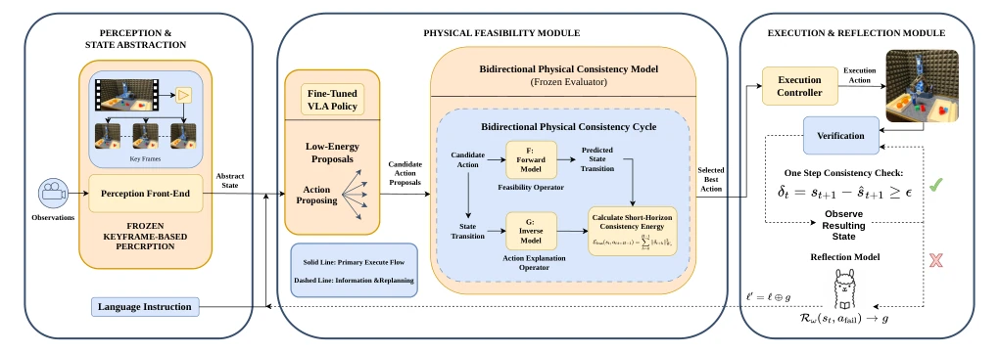
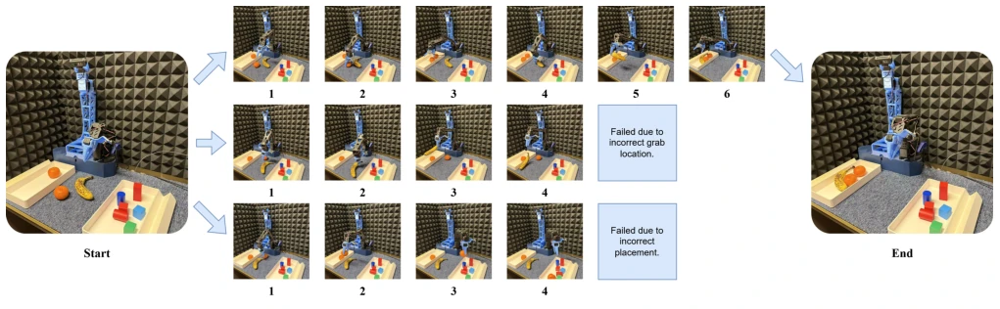

This paper forcibly equips VLA models with "physical glasses" and a "reflective brain". VLA models typically output actions with confidence, regardless of whether they are physically feasible, like a reckless brute who does not understand mechanics. PhysReflect-VLA attempts to patch this vulnerability through external feasibility assessment and self-reflection modules. Although "plug-and-play" sounds very appealing, the added bidirectional consistency calculation and LLM reflection modules inevitably bring inference latency. However, in long-horizon, contact-rich tasks, this "slow thinking" indeed proves critical. It is just unknown whether in high-speed dynamic scenarios, this closed-loop might become a bottleneck due to excessive computational overhead. Overall, it is a pragmatic improvement, but still far from true "physical intelligence". It proves that adding physical constraints on top of VLA is an effective path to improve reliability, rather than relying solely on data scale.
Existing VLA models [4], [5] perform excellently in semantic understanding but have fatal defects at the execution level. The main problem lies in that most VLA systems generate action sequences in a feedforward manner [9], [10], lacking real-time assessment of physical feasibility. This leads to, in contact-rich or constraint-sensitive scenarios, small prediction errors accumulating over time, triggering catastrophic failures [13], [14]. Furthermore, there is a lack of structured self-reflection mechanisms [16], [17] during execution, so the system cannot diagnose execution deviations or correct subsequent decisions. This "blind execution" makes the strategy extremely poor in adaptability when facing environmental distribution shifts. Therefore, how to embed physical consistency and online self-correction capabilities while maintaining VLA generalization ability is the key to improving embodied intelligence reliability.
PhysReflect-VLA constructs a closed-loop execution framework. First, the VLA policy generates candidate action segments. Next, evaluate through a bidirectional physical consistency model: the forward model predicts state transitions, the inverse model reconstructs action explanations, and calculates consistency energy to filter physically reasonable actions. After execution, if the observation state deviation from prediction exceeds the threshold, the reflection module is triggered. This module generates correction instruction tokens based on failure context, enhances the original instruction, and resamples actions. Training is divided into two stages: first jointly pretrain the feasibility backbone network, then freeze the policy to fine-tune the physical model, finally introduce reflection learning, using teacher VLM labeled failure cases for supervision. The whole process does not modify VLA internal weights, achieving seamless integration of feasibility assessment and self-reflection.

Fig. 1. Overview of PhysReflect-VLA. Given visual observations and a language instruction, a base VLA policy samples multiple candidate action segments. A bidirectional feasibility evaluator, consisting of a forward transition predictor and an inverse action explainer, computes a consistency energy for each candidate and ranks them according to physical admissibility. The selected action is executed in the environment, and discrepancies between predicted and observed transitions are detected. When persistent inconsistencies arise, a reflection module generates corrective guidance that augments the original instruction and modulates subsequent action sampling. This closed-loop pipeline integrates physical feasibility evaluation and structured self-reflection to improve reliability in long-h
Evaluated on 5 real-world robot long-horizon manipulation tasks, including Table-Bussy, Drawer-Cycle, Lid-Open, etc. Comparison baselines include DP [24], ACT [25], RT-1 [13], OpenVLA [21], etc. Results show that PhysReflect-VLA average success rate improved by 5.4%, for example OpenVLA-OFT from 82.0% to 85.0%. Ablation studies show that bidirectional feasibility assessment is the main source of gain, while the reflection mechanism provides additional robustness in contact-sensitive tasks. Particularly noteworthy is that removing cycle consistency training leads to a significant performance drop, indicating that alignment between forward and inverse models is crucial. This proves the effectiveness of combining physical consistency checks with online self-reflection.

Fig. 2. Qualitative comparison on a long-horizon Table-Bussy rollout. Starting from the same initial scene (left), the baseline VLA executes raw action proposals and fails due to physically/semantically inconsistent transitions, e.g., an incorrect grab location (middle row) or an incorrect placement (bottom row). In contrast, PhysReflect-VLA evaluates sampled candidates with the bidirectional consistency energy and preferentially executes proposals that induce physically admissible and interpretable state transitions, yielding a successful multi-step rollout (top row) and the desired final scene (right).